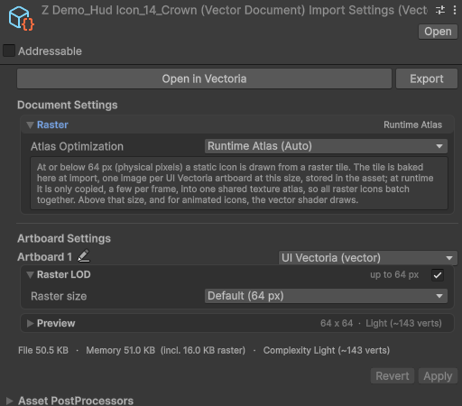

Importer
Artboard asset types, UI Vectoria and import-time baking.
Select a .vpaint in the Project window to see its importer in the Inspector. It decides what Unity makes from each artboard, and it does the baking that makes the artwork ready for runtime.

What is in the inspector
- Open in Vectoria opens the file in the painter, and Export opens the export dialog for it.
- Document Settings › Raster › Atlas Optimization chooses where the baked raster tiles go. Runtime Atlas (Auto) is the default: tiles are copied into one shared atlas at runtime. Unity Sprite Atlas (Manual) saves them as Sprite assets instead, see Raster LOD.
- Artboard Settings has one row per artboard, with its Asset Type (below). For a UI Vectoria artboard it shows Raster LOD (a checkbox and the size, Raster size, where Default follows Settings) and a Preview.
- The line under the settings shows the file size, the memory it takes (including what the raster tiles add) and a mesh complexity estimate (about how heavy the MeshBatch path would be). It is not the shader cost meter that the painter shows, which rates the Shader resolver.
- Revert and Apply work as on any importer. Multi-selection edits several files at once.
Asset types
Set every artboard that you show with Vectoria Image to UI Vectoria. That is the type that gets the import-time baking below. The inspector shows the type of each artboard, so you can check it there.
| Asset type | Result |
|---|---|
| UI Vectoria (vector) | A small UIVector sub-asset: the document plus the artboard id. No bitmap, no mesh. Use this for Vectoria Image. Pick it with the magnifier beside the Artboard dropdown of a VectoriaImage or VectoriaImageElement, and both document and artboard are set. All resolvers work as usual. |
| Textured Sprite (rasterized) | The artboard drawn into a bitmap (size x Scale) wrapped in a Sprite. Fixed resolution. For SpriteRenderer, UI Image and sprite atlases. |
| Texture 2D (rasterized) | A plain bitmap texture. Fixed resolution. |
| Vector Sprite (vector) | A tessellated triangle mesh for SpriteRenderer and other 2D uses. Sharp at any size. |
| UI SVG Image (vector) | A tessellated mesh for the uGUI SVGImage component. |
| None | Nothing is generated. The artboard cannot be used as an asset. |
Shader Bake and Raster LOD
These apply only to artboards set to UI Vectoria. For them the importer precompiles the shader data (the Shader Bake sub-asset) and bakes the raster tiles, so the artwork is ready on the first frame. The Raster LOD box appears only when the file has such an artboard. Other artboards are compiled when they are first drawn.
The importer's Migrate command is at Tools › Vectoria › Migrate .vpaint Import Settings.